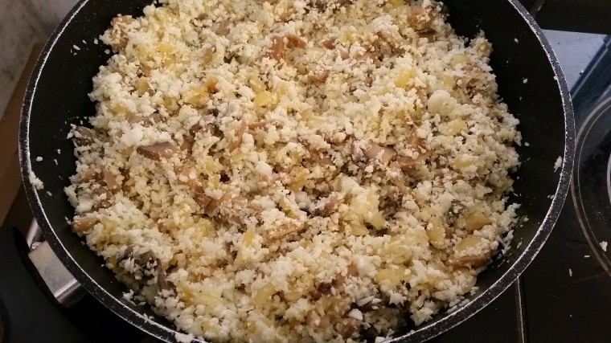

"אורז" כרובית עם בצל ופטריות
מתכון קליל להכנה וקליל לעיכול , טעים ומאוד משביע!
רכיבים:
ראש כרובית טרייה
1 בצל
פטריות שמפיניון/איזה סוג שאתם אוהבים
מעט שמן זית
מלח, פלפל שחור ו-1/4 כפית כורכום
אופן ההכנה:
חותכים את הבצל לקוביות קטנות, מאדים בסיר עם תחתית עבה על אש נמוכה עד לריכוך.
מפרקים את פרחי הכרובית ושמים אותם במעבד המזון וטוחנים עד למרקם פירורי גס.
מוסיפים לבצל את הפטריות ו2 כפות שמן זית וממשיכים לאדות עוד כמה דקות, מוסיפים את פתיתי הכרובית ואת התבלינים וממשיכים לאדות עוד כרבע שעה עשרים דקות על אש נמוכה עד שמתרכך. בתאבון!